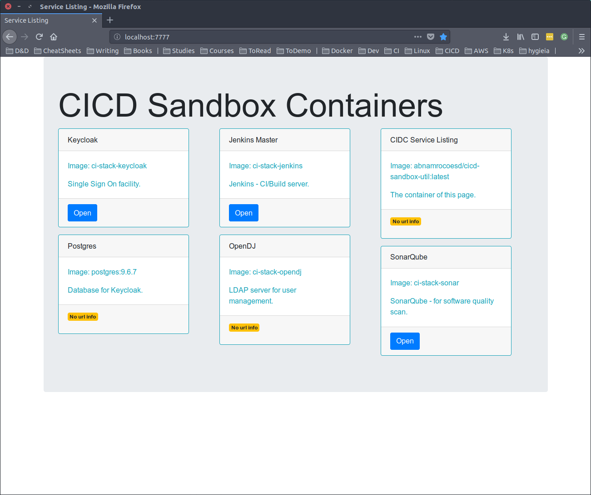

Service Listing¶
The service listing is there to help you visualize the running containers of your CICD sandbox.
It can do this in two ways, print the listing or host the listing as a html page.
Print Listing¶
1 2 3 4 5 | docker run --rm --name util-temp \ -v /var/run/docker.sock:/var/run/docker.sock \ abnamrocoesd/cicd-sandbox-util \ cicd-util --action list-docker --namespace cidc\ --labelPrefix com.github.joostvdg. |
This will result in the following response:
1 2 3 4 5 6 7 8 9 10 11 12 | == EXTERNAL_HOSTNAME= == Hostname to use: 4189e58394ca == Action to perform: list-docker > Probing Host: unix:///var/run/docker.sock > We found these containers: > [Name=Keycloak, Description=Single Sign On facility, WebPath=/, WebPort=8280] > [Name=Postgres, Description=Database for Keycloak, WebPath=, WebPort=] > [Name=Jenkins Master, Description=Jenkins - CI/Build server, WebPath=/jenkins, WebPort=8282] > [Name=OpenDJ, Description=LDAP server for user management, WebPath=, WebPort=] > [Name=CIDC Service Listing, Description=The container of this page, WebPath=, WebPort=] > [Name=SonarQube, Description=SonarQube - for software quality scan, WebPath=/sonar, WebPort=8289] ----------------- |
Host Listing¶
1 2 3 | docker run --rm --name util-temp abnamrocoesd/cicd-sandbox-util\ cicd-util -action serve \ -labelPrefix "my.labe.prefix." -namespace "myNamespace" |

How to use¶
The util application has several actions you can choose from.
Two of those actions are related to the service listing: list-docker and serve.
There are two parameters you will need to supply for both of these actions: -labelPrefix and -namespace.
- labelPrefix: the prefix you use for the docker labels in the docker configuration
- namespace: the namespace to filter on, this allows you to have separate sets of containers using the same label prefix but different namespace. Be sure to end in a
.!
There are several optional parameters as well:
- name: the name of the service
- description: a short description of the service
- webPath: the path to the application in the container that is useful to the user, leave blank if there's no such thing
- webPort: the port for the webPath, leave blank if there's no such thing
Docker configuration¶
As briefly mentioned, you need to use labels within your docker configuration.
As the service listing is itself also a web application, you can also use it to list itself!
1 2 3 4 5 6 7 8 9 10 11 12 13 | service-listing: image: abnamrocoesd/cicd-sandbox-util:latest labels: - my.label.prefix.namespace=wisent - my.label.prefix.name="CIDC Service Listing" - my.label.prefix.description="The container of this page" - my.label.prefix.webPath=/ - my.label.prefix.webPort=7777 command: cicd-util -action serve -labelPrefix "my.label.prefix." -namespace "myNamespace" restart: always volumes: ["/var/run/docker.sock:/var/run/docker.sock"] ports: - 7777:7777 |